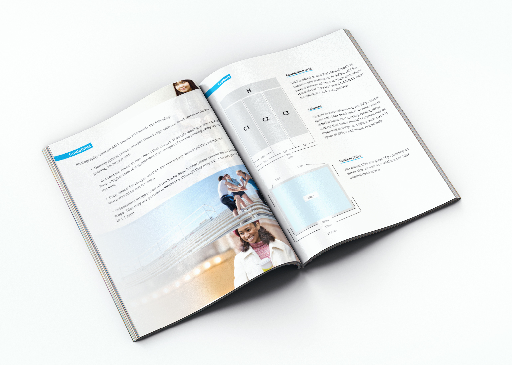
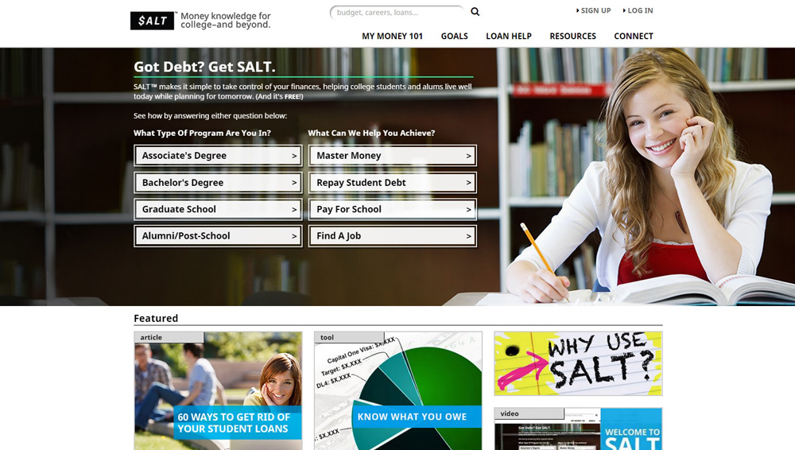
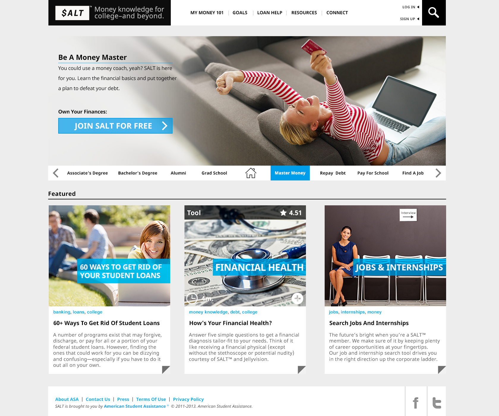
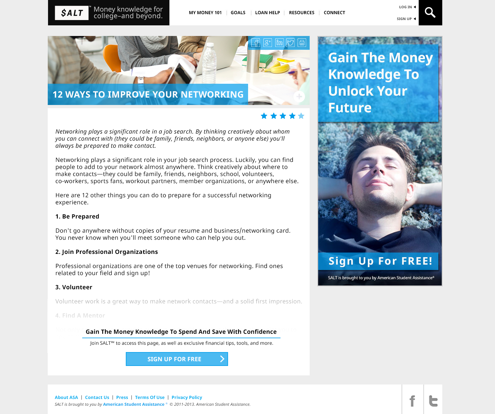

![]()
SALT Redesign
SALT was created by the American Student Assistance (ASA), a well-respected brand that wanted to create a powerful financial education product for college students and alumni. The goal of the platform – and our team as a whole – was to give people the confidence to approach and pay back their loans as well as making smarter financial decisions.
The Case
SALT began as an experiment in 2012 and was mostly used as a marketing tool for partnerships without much platform support or content. User signups, user retention and user satisfaction was minimal, so our team took on the task of not only updating SALT’s visual design, but information architecture and content strategy as well.
 The old homepage circa mid-2013, from the day I joined the team
The old homepage circa mid-2013, from the day I joined the team
The Research
The first step was redefining SALT’s product design and content guidelines. I took on the role of liaison between engineering, marketing, and product design to define, write, and build out a comprehensive style guide for both the front-end and the brand strategy. In the meantime, our team spent time researching modern design trends and documenting the ones that would fit within our product. As a team, we identified the necessity for personas to overcome the difficulty of targeting specific content to specific audiences without any existing data.
Designing without data is hard. Hands on field user research was the key to success for SALT.
With that in mind we designed an onboarding system that would drop users into pre-assigned "curated" curriculums based on their federal loan data (which was manually uploaded at the time) and the information they provided.
 High level user flow sketch
High level user flow sketch
The Guidelines
Following our research, I drafted and released a comprehensive style guide outlining everything from our new typography, iconography and brand standards to what defined "good UX" as well as photographic and content voice guidelines. Included in the guide was a description of the design philosophy behind responsive design, a relatively new concept to non-tech companies in 2013.
 Mockup of the final printed documentLesson: Introducing new design thinking to old companies is a challenge worth enduring.
The Homepage
The final product resulted in a compromise between content and design teams, in which we focused on keeping the least amount of steps possible between the user and the material, while still holding onto enough data from the user to create useful content suggestions.
 The finalized homepage designThe Dash of Salt
Phase two of the project solidified into a "user dashboard" of sorts, which would pull data from the user's onboarding process to display relevant content and tools. While the dashboard will not be fully developed until the second quarter of 2015, our usability testing with Communispace's community members was an enlightening experience on its own.
While the first few iterations fell flat we eventually arrived at the implementation of a simple touch friendly "task list". The considerable reduction of on-screen content provided less cognitive overload and was a resounding success during user testing.
 Comparison between wireframes
Comparison between wireframes
1. Dashboard tool/data was redesigned to more closely resemble wireframe (and it looks better!) I also added customizable reminder modules below, which increased the user's perception of value.
2. "To-do list" UX completely re-built. I made sure the focus was on a pervasive, non-obligatory interaction on the sidebar rather than an unintuitive feature of the dashboard.
3. The "library" served as guided browsing according to user requirements, but it wasn't clear where content could be found without exiting the flow through the nav-bar. On the revised frame, I placed suggested content directly within the fold, and allowed users to continue their guided browsing from there on.
4. Top 3 Tasks, Suggested Tasks, and To-Do list were originally all separate items. I simplified the process by consolidating all 3 and placed them in a dedicated list management page
The Concept
Dash of SALT was my two day rough draft of what I hoped SALT could become
My final project at SALT was to contribute a vision of where it could go given time and resources. Based on the brand guidelines we developed, I further reduced clutter and created a more coherent call to action and visual language for users to follow. Below are the rough drafts of the prototypes I designed:
Note: the clear calls to action in blue  Users could pre-select their paths by navigating  Until signup, certain content would be walled off